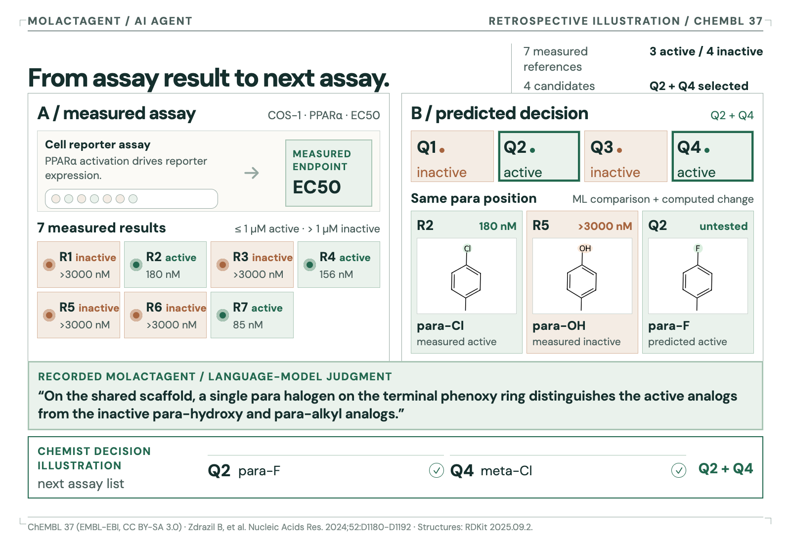

Choose the next compounds to test.
You have activity measurements for a few compounds and room for only a few more in the next experiment. MolActAgent predicts which candidates will be active and shows the measured compounds behind each call.
From the assay to the shortlist
COS-1 cell reporter assay
The experimental decision
Two compounds for the next assay.
In this retrospective batch, MolActAgent predicted Q2 and Q4 active. A chemist can trace each call to structures already tested under the same conditions.
Read the batch reportWhy take Q2 forward?
The candidate carries fluorine at a position where a measured active reference carries chlorine. A measured inactive analog has a hydroxyl group at that same position.
| Reference | Group | Measured EC₅₀ |
|---|---|---|
| R2 | –Cl | 180 nM · active |
| R5 | –OH | >3,000 nM · inactive |
The example defines active as EC₅₀ at or below 1,000 nM. The four candidate measurements were compared with the predictions afterward. Assay data and sources
Bring your assay.
Start with your reference measurements, candidate structures and a compatible language-model API.